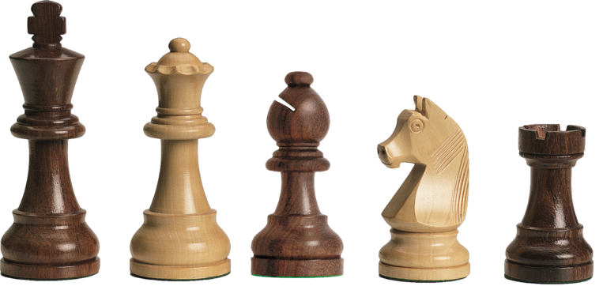

CHESS
WHAT IS CHESS?
Chess is a board game between two players. It is sometimes called international chess or Western chess to distinguish it from related games, such as xiangqi (Chinese chess) and shogi (Japanese chess). The current form of the game emerged in Spain and the rest of Southern Europe during the second half of the 15th century after evolving from chaturanga, a similar but much older game of Indian origin. Today, chess is one of the world's most popular games, played by millions of people worldwide.
HOW CHESS PIECES MOVE
- "Kings move one square in any direction, so long as that square is not attacked by an enemy piece. Additionally, kings are able to make a special move, known as castling."
- "Queens move diagonally, horizontally, or vertically any number of squares. They are unable to jump over pieces."
- "Rooks move horizontally or vertically any number of squares. They are unable to jump over pieces. Rooks move when the king castles."
- "Bishops move diagonally any number of squares. They are unable to jump over pieces."
- "Knights move in an ‘L shape’: two squares in a horizontal or vertical direction, then move one square horizontally or vertically. They are the only piece able to jump over other pieces."
- "Pawns move vertically forward one square, with the option to move two squares if they have not yet moved. Pawns are the only piece to capture different to how they move. The pawns capture one square diagonally in a forward direction."
CHESS TUTORIAL FOR BEGINNERS